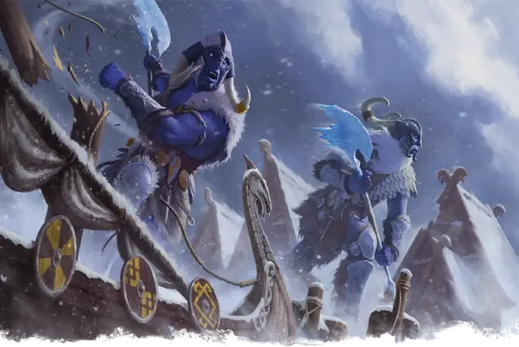

Ледяной великан
Frost Giant
Огромный Великан, Нейтральный Злой

Класс Защиты 15 Инициатива +2 (12)
Хиты 149 (13к12 + 65)
Скорость 40 футов
| мод | спас | ||
|---|---|---|---|
| СИЛ | 23 | +6 | +6 |
| ЛОВ | 9 | −1 | −1 |
| ТЕЛ | 21 | +5 | +8 |
| мод | спас | ||
|---|---|---|---|
| ИНТ | 9 | −1 | −1 |
| МДР | 10 | +0 | +3 |
| ХАР | 12 | +1 | +4 |
Иммунитеты Холод
Чувства пассивное Восприятие 13
Языки Великаний
Опасность 8 (3 900 опыта; БВ +3)
Действия
Мультиатака. Великан совершает две атаки Ледяным топором или Большим луком в любой комбинации.
Ледяной топор. Бросок рукопашной атаки: +9, досягаемость 10 фт. Попадание: 19 (2к12 + 6) Рубящего урона плюс 9 (2к8) урона Холодом.
Большой лук. Бросок дальнобойной атаки: +9, дистанция 150/600 фт. Попадание: 17 (2к10 + 6) Колющего урона плюс 7 (2к6) урона Холодом, и Скорость цели снижается на 10 футов до конца её следующего хода.
Бонусные действия
Боевой клич (Перезарядка 5–6). Великан или одно видящее и слышащее его существо по его выбору получает 16 (2к10 + 5) Временных хитов и Преимущество на броски атаки до начала следующего хода великана.
Бонус мастерства +3
Среда обитания Арктика, Горы
Сокровища Оружейные
Ледяной великан
Великан льда и снега
На покрытых льдом горных вершинах и в бескрайних просторах тундры возвышаются дома ледяных великанов. Их цвет волос и кожи напоминает оттенки льда, а природная невосприимчивость к холоду позволяет им процветать в местах, непригодных для жизни большинства существ. Они используют свою стойкость на охоте и в бою, а также подбадривают друг друга свирепыми боевыми кличами.
Ледяным великанам часто приходится искать пищу и ресурсы вдали от своих домов. Из-за этого многие из них становятся жестокими налётчиками. Другие живут более мирно: охотятся на мегафауну или создают убежища от холода (часто с горячими источниками и зимними забавами).
Иногда ледяные великаны заключают сделки с ледяными Феями или огненными великанами, обитающими под землёй, и служат стражами в их царствах в обмен на сокровища, оружие и ремесленные изделия.